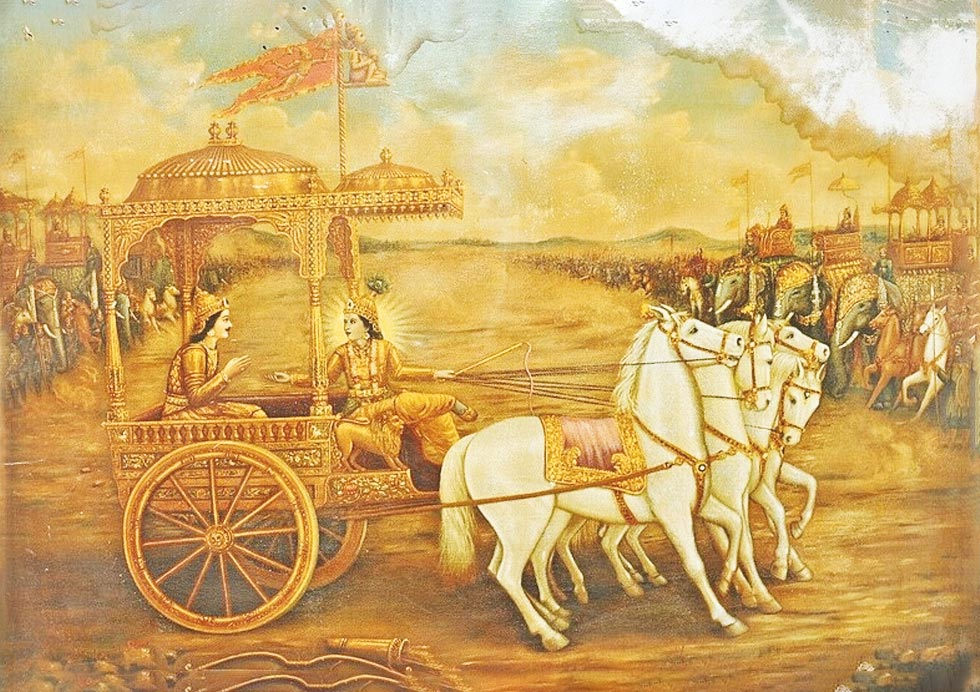

সরল ভাবার্থ
সঞ্জয় বললেন— হে ধৃতরাষ্ট্র! অর্জুনের (গুড়াকেশ) দ্বারা এভাবে আদিষ্ট হয়ে হৃষীকেশ শ্রীকৃষ্ণ উভয় সেনাবাহিনীর মাঝখানে সেই শ্রেষ্ঠ রথটি স্থাপন করলেন।
বিস্তারিত ধর্মীয় ব্যাখ্যা
এই শ্লোকটিতে সঞ্জয় অর্জুনকে 'গুড়াকেশ' বলে সম্বোর্ডন করেছেন। গুড়াকা মানে নিদ্রা বা আলস্য। যিনি নিদ্রাকে জয় করেছেন, তিনিই গুড়াকেশ। অর্জুন ছিলেন অখণ্ড মনোযোগ এবং কর্মশক্তির প্রতীক। কিন্তু এমনকি একজন নিদ্রাজয়ী বীরও যে মায়ার প্রভাবে মোহগ্রস্ত হতে পারেন, তা এই অধ্যায়ের পরবর্তী অংশগুলোতে দেখা যাবে। শ্রীকৃষ্ণ এখানে নিখুঁত সারথির মতো অর্জুনের আদেশ পালন করছেন। ভগবানকে এখানে 'হৃষীকেশ' বলা হয়েছে, যা অর্জুনের 'গুড়াকেশ' নামের সাথে একটি সুন্দর বৈপরীত্য তৈরি করে। অর্জুন নিদ্রা জয় করেছেন, কিন্তু শ্রীকৃষ্ণ জয় করেছেন পুরো মহাজাগতিক ইন্দ্রিয়জগতকে।
এই শ্লোকটি ভক্তি ও আদেশের এক গভীর রহস্য প্রকাশ করে। ব্রহ্মাণ্ডের অধিপতি শ্রীকৃষ্ণ তাঁর ভক্তের সামান্য ইচ্ছা পূরণ করতে রথ চালাচ্ছেন। এটি প্রমাণ করে যে, ঈশ্বরের কাছে আভিজাত্যের চেয়ে প্রেম বড়। শ্রীকৃষ্ণ কিন্তু রথটি যে কোনো জায়গায় রাখতে পারতেন, কিন্তু তিনি রাখলেন 'সেনয়োরুভয়োর্মধ্যে' অর্থাৎ ঠিক মাঝখানে। এটি ছিল শ্রীকৃষ্ণের এক নিপুণ কৌশল। তিনি অর্জুনকে সরাসরি সেই সত্যের মুখোমুখি করতে চেয়েছিলেন যা অর্জুন আগে কখনো অনুভব করেননি। মানুষের জীবনেও ঈশ্বর আমাদের অনেক সময় পরিস্থিতির এমন এক চরম সীমায় নিয়ে দাঁড় করান, যেখানে আমাদের পালাবার কোনো পথ থাকে না। সেখানে আমাদের মোহ বা অহংকার ভেঙে চুরমার হয়ে যায়। অর্জুন ভেবেছিলেন তিনি কৌরবদের ধ্বংস করবেন, কিন্তু শ্রীকৃষ্ণ রথটি এমনভাবে রাখলেন যাতে অর্জুনের প্রিয়জনেরা তাঁর সরাসরি চোখের সামনে পড়েন। এই রথ স্থাপন কেবল ভৌগোলিক ছিল না, এটি ছিল একটি মনস্তাত্ত্বিক ফাঁদ, যার মাধ্যমে অর্জুনের ভেতরের দুর্বলতা বেরিয়ে আসবে এবং তিনি গীতার অমৃত জ্ঞান লাভের যোগ্য হবেন।

[ছবি: ভগবান শ্রীকৃষ্ণ সাদা ঘোড়ার লাগাম টেনে ধরে রথটিকে দুই সেনাবাহিনীর মাঝখানে একদম স্থির করে দাঁড় করাচ্ছেন।]